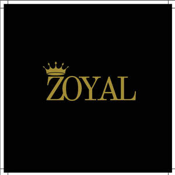

Trade Mark Journal No.2025/029 18 July 2025
UK00004232356 11 July 2025 (3,20,44)

- Class 3
- Cosmetics; Skincare cosmetics; Moisturisers [cosmetics]; Cosmetics and cosmetic preparations; Hair cosmetics; Skin fresheners [cosmetics]; Cosmetics for eye-lashes; Cosmetics for suntanning; Anti-aging moisturizers used as cosmetics; Organic cosmetics; Lip cosmetics; Non-medicated cosmetics; Nail cosmetics; Skin moisturizers used as cosmetics; Mousses [cosmetics]; Natural cosmetics; Cosmetics preparations; Make-up palettes containing cosmetics; Tanning gels [cosmetics]; Cosmetics in the form of lotions; Tanning oils [cosmetics]; Facial creams [cosmetics]; Colour cosmetics; Beauty care cosmetics; Self-tanning preparations [cosmetics]; Suncare lotions [for cosmetic use]; Cosmetics for animals; Eyebrow cosmetics; Tanning preparations [cosmetics]; Decorative cosmetics; Multifunctional cosmetics; Milks [cosmetics]; Eye cosmetics; Body creams [cosmetics]; After-sun oils [cosmetics]; Skin masks [cosmetics]; Tanning milks [cosmetics]; Cosmetics for eye-brows; Functional cosmetics; Facial gels [cosmetics]; Suntan oils [cosmetics]; Skin care cosmetics; Fluid creams [cosmetics]; Suntan lotion [cosmetics]; Cosmetics for children; Non-medicated cosmetics and toiletry preparations; Humectant preparations [cosmetics]; Emollient preparations [cosmetics]; Cosmetics in the form of creams; Powder compacts [cosmetics]; Sun-tanning preparations [cosmetics]; Cosmetic hair lotions; Colour cosmetics for the skin; After-sun milks [cosmetics]; Suntanning oil [cosmetics]; After-sun milk [cosmetics]; Cosmetics for use on the skin; Cosmetic moisturisers; Sunscreens [for cosmetic use]; Bath powder [cosmetics]; Cosmetic creams and lotions; Night creams [cosmetics]; Skin recovery creams [cosmetics]; Body gels [cosmetics]; Sun blocking lipsticks [cosmetics]; Cosmetics for the use on the hair; Cosmetic products in the form of aerosols for skincare; Body and facial creams [cosmetics]; Sunscreen [for cosmetic use]; Lip stains [cosmetics]; Sunscreen creams [for cosmetic use]; Body care cosmetics; Creams (Cosmetic -); Cosmetic creams; Cosmetic soaps; Cosmetics containing keratin; Cosmetics in the form of powders; Hair care lotions [for cosmetic use]; Cosmetic skin fresheners; Dyes (Cosmetic -); Cosmetic dyes; After-sun lotions [for cosmetic use]; Cosmetics in the form of oils; Cosmetics containing panthenol; Beauty lotions; Cosmetic facial lotions; Facial lotions [cosmetic]; Nail paint [cosmetics]; Cosmetic suntan lotions; Skin care lotions [cosmetic]; Nail hardeners [cosmetics]; Colour cosmetics for children; Perfume oils for the manufacture of cosmetic preparations; Tissues impregnated with cosmetics; Nail tips [cosmetics]; Cosmetic products for the shower; Anti-aging creams [for cosmetic use]; Sun protecting creams [cosmetics]; Nail primer [cosmetics]; Anti-ageing creams [for cosmetic use]; Smoothing emulsions [cosmetics]; Skin cleansers [cosmetic]; Perfumed powders [for cosmetic use]; Liners [cosmetics] for the eyes; Moisturising skin lotions [cosmetic]; Cosmetic creams for the skin; Skin creams [cosmetic]; Skin creams [for cosmetic use]; Body and facial gels [cosmetics].
- Class 20
- Kennels for household pets; Beds for pets; Playhouses for pets; Beds for household pets; Grooming tables for pets; Portable beds for pets; Pet houses; Pet crates; Pet furniture; Non-metal safety gates for babies, children, and pets; Pet grooming tables; Nesting boxes for household pets; Household pets (Nesting boxes for -); Pet cushions; Cushions (Pet -); Nesting boxes for pets; Dog kennels; Inflatable pet beds; Dog houses [kennels]; Barrels (Non-metallic -) for the identification of pet animals.
- Class 44
- Grooming of pets; Care of pet animals; Pet grooming; Grooming (Pet -); Services for the care of pet animals; Grooming salon services for pet animals; Services for the care of pet birds; Grooming of animals.
Mohammad Abbas